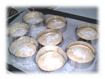
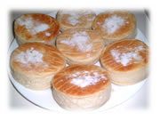

3月の日記(2)
[前の日記]
[過去の日記一覧へ]
[次の日記]
新しいものは上になります。下から読んでね(^^)
2002年3月21日(木) 晴れ
『refund（返金）』
昔、日本で、間違えて買ってしまったりして「取り替えてください」というと嫌な顔をされることがよくありました。でもきちんと取り替えてくれます。
こっちで「間違えて買ってしまったので取り替えてください」というと、にこにこして、「ＯＫ，じゃあ、あそこに並んでね」と言われます。そこはカスタマーサポートの列で、１つしかあいていないカウンターにすごい列ができていて、とろとろ処理しているのですごく待たされます。以前、アイスクリームを間違えて買ってしまって取り替えようとしたとき、1時間近く待たされた記憶があります。
と、これは前置きです。
うちは月々支払わなくてはならないものが7項目あるのですが、こっちでは自動引き落としできないものがたくさんって、チェックを切って送ります。以前はひとつひとつ、手書きのチェックを送っていたのですが、今では、銀行のオンラインバンキングが使えるようになったため、とっても便利。Webでチェックを切るように手続きするだけです。
ところが、1月の初めに間違えたチェックを切ってしまいました。しかも、700ドル払わなくちゃいけない車の保険会社に12ドル、12ドルでいい電話会社に700ドル。1月の終わりに車の保険会社から未払いの連絡があって気が付いたときには、12ドルでいいはずの電話会社は私の700ドルのチェックを現金に替えてしまっていました。
上記のカスタマーサポートの例があるので、refund(返金)には、時間がかかると思うとうんざりしました。
とりあえず、電話会社に「700ドルを返して欲しい」と電話すると「こちらが現金に替えたという証明がないとダメ、こちらが現金に替えたチェックの裏のサインのコピーを銀行から取り寄せて送ってください」と言われました。
銀行にその依頼をすると、調べてくれたあとで「オンラインで処理されているのでサインは残っていません」と言います。
もう一度、電話会社に電話すると「そんなことはない、こっちはサインしている」。
銀行に「調べてくれ」と電話すると、「OK、3日かかります」と気楽に言われましたが、1週間たっても連絡ひとつ来ません。
もう一度銀行に確認の電話をすると同時に、オンラインバンキングのWebサイトを見ると、「調査依頼」の項目があって、「サインの入っているチェックのコピーを送って欲しい」という選択があるではありませんか。早速、その手続きをしました。
1週間待っても連絡がきません。
電話会社に「そちらに私の７００ドルが入金されている記録があるんだから、それで返してほしい」と電話をすると、チェックのコピーがないとできない、と言い張ります。
もう一度、オンラインバンキングをチェック。「処理中」とのこと。
2週間くらいして、銀行から電話があり、「支払いの証明をしたいのですね？」と言われて、相手の電話会社に電話をしてくれて3人で電話で話し、やっと私の700ドルがその電話会社に支払われたという証明をすることができました。
その2日後くらいに、銀行から、間の抜けた「調査結果」が送られてきて、「チェックはありません。理由は．．．．」。
その1週間後にまたまた電話会社から電話があって、「うちの電話会社を使うのをやめるのか？」というわけのわからない質問をされ、そのままカスタマーサポートにつないでもらって、お金を返してもらいたいだけだと説明。
そして2週間以上たった、おとといの火曜日、やっと無事、700ドルの返金のチェックが電話会社から届きました。
ひとつひとつの電話はとても待たされます。同じ会社内でも電話を受けた人によって言うことや、やっていることが違うので、何度も何度も説明しなくてはなりません。今回のように間違った情報を与えられることもしばしばなので、一度電話で「それはできません」と言われても、「そんなことはない」と強気に説明すると通ることもあります。
まぁ、だめならだめで、今回の場合は、次の手段もあったのですけどね( -。-)ｙ-゜゜゜
どこをとっても根気がいります。「ごめんなさい」などという言葉はどこからも出てこず、私が必要以上に恐縮していた気も。いや、逆に強気すぎたかな？(^^;、、、とにかく、相手に比べて、真剣過ぎたというか(^^;
嫌な顔されても、説明するときちんと処理してくれる日本と、ニコニコと気前よく時間がかかかるこの国．．．疲れているときはムッときたり、悲しくなったりするけど、「まぁいいや」と思ったら負けだと思って、いつも頑張ってますp(^^)q
2002年3月17日(日) 雨のち曇り
『アスパラガス』
アスパラガスが出回ると「春が来たなぁ〜」って感じます。でも、これを買ったのは1週間前。だんだん暖かくなってきたのに、ここのところ急に冷え込みました。春ってこういう感じではじまりますよね。
アスパラガスは、できるだけ細いのがいいそう。普段は太くて高いのしか売ってないけど、この季節は細くて安いのが買えます。買って来たら、端の部分は指でポキポキ折れるとこで折るのがおいしいんですって。ゆでてバターをからめて食べたり、マヨネーズで食べたり。おいしいよ(*^^*)
2002年3月14日(木) 晴れ
『流行のダイエット』
日本の雑誌とかでよく、「アメリカで大流行」って紹介されてることってありますよね。でも、こっちの周りの人に聞いても誰も知らない、ということもよくあります。日本だと「大流行」と言われると、詳しくは知らなくてもほとんどの人が知ってますよね。でも、アメリカだと大陸も広いしメディアもたくさんあるので、本当に誰もが知ってる大流行のものなんてないんじゃないかと思うくらいです。
が、最近、私の周りで流行ってるこのダイエット、本当に流行中のようで、久しぶりに私的（わたしてき）に「アメリカで大流行」と呼べるようなものに出会った感じです。（というとおおげさですが(^^;）
それは、炭水化物と糖分を全くとらないで、あとは普通に食べてやせる、というものです。ごはん、パン、麺類はダメで、肉やお魚はいくら食べてもいいそうです。あとにんじんなどの根菜もダメみたいです。たとえば、ハンバーガーは、まわりのパンはダメで肉はいいので、ハンバーガーを２つ買って肉を２枚食べてパンを捨てる、という食べ方はいいそうです。
でも、このダイエットの欠点は、力のつくものを食べないために、体中から力が抜ける感じがするそう。たぶん、やる気も減って、頭がぼーっとする時間が多くなるんじゃないかな。
いい悪いはよくわからないけど、成果は。。。というと、本当にすごくやせるみたいです。これを実行してる人、みんなやせはじめてます。びっくりです。
考えてみると、肉社会のアメリカ人にぴったりのダイエットですよね。体力がなくなるとは言っても、彼等は割腹がよく、基礎体力はありそうですから、たいした問題もなさそうだし(^^;。やせれば足の負担もかからなくなるから健康的そうだし。
でも、なんとなく日本人には合わなそうですよね。日本人はもともと、肉を大量に食べるわけではないから、こんなダイエットを取り入れたら、肉ばかり食べるようになって返って身体に悪そう。それにお蕎麦やおうどんもダメなんですよ。私はパンもご飯もやめたくないなぁ。
ところで、私がなんと言ってもやめられないもの、それはフレンチフライです。1週間に３回は食べたいです。昔から好きだったけど、アメリカに来たら日本より簡単に安く食べられるのが嬉しい。会社のカフェでも必ず売ってるし。お腹が痛いときでもフレンチフライを食べると直ることもあります。（好きなものを食べると直るらしい(^^;）
2002年3月12日(火) くもり
『イングリッシュマフィン』
週末のパン、おとといはイングリッシュマフィンを焼きました(^^)
イングリッシュマフィンを作ろうと思ったら、まず型が必要。幅３cm、長さ２８cmに厚紙を切り、直径約９cmの輪をつくります。両端を合わせてホッチキスでとめて、周りにアルミホイルをまいて出来上がり。下記のレシピだと型は
８つ
必要です。
私の場合は、型を４ついただいたので（智美ちゃん、ありがとう！）、残りの４つだけ厚紙とアルミホイルで作りました。それが左の写真
♪作り方♪
（必要な材料は太字にしてます）
 (1)
バター ２０g
、
砂糖 大さじ1 1/2
、
塩 小さじ1 1/2
、
ぬるま湯 １７０cc
、を混ぜる。
(2)
強力粉 ２４０g
、
コーンミール（または上新粉） ２０g
をふるいながら入れ、
ドライイースト 小さじ２
も入れる。
(3) こねる（手でこねるばあいは１５分間３００回くらい）
(4) 大きめのボールに熱湯をいれ、小さいボールにまとめた生地を入れ、ビニール袋などでおおう。３０〜４０分。（1次発酵）
 (5) ８等分にわけて寝かせる。10分。（ベンチタイム）
(6) 型を並べ、コーンミール（上新粉）を型の底にパラパラふる。
(7) 生地を丸く平らにして型に入れ、上にコーンミール（上新粉）パラパラふる。寝かせる。３０分〜４０分。（２次発酵）
（８） 焼く５分くらい前にオーブンを２００度C（４００度F）にあたためる。
(9) 上にアルミホイルをかぶせてオーブンに入れる。10分。途中、下の面に薄く色がついたら裏返す。私は７分で裏返して残り３分焼きます。
できあがり♪。そのまま食べてもいいし、食べる前に半分に割ってトースターで焼いてバターをぬるのも定番。冷凍保存もできます。冷凍にしたら、食べる３０分くらい前に冷凍庫から出しておいてね。
新しいものは上になります。下から上に読んでね(^^)
[前の日記]
[過去の日記一覧へ]
[次の日記]
[ホーム]